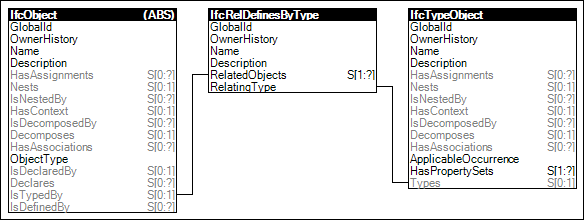

Figure 9 illustrates an instance diagram.
 |
Figure 9 — Object Typing |
Object occurrences can be defined by a particular object type, using the Object Typing concept. A pair of entities are defined for most semantic objects - an object occurrence entity and a corresponding object type entity.
EXAMPLE The IfcTank is the object occurrence entity that has a corresponding IfcTankType being the object type entity.
On instance level, an object occurrence instance may have:
Characteristics defined at the object type level may include:
Many object occurrence and object type entities have an attribute named PredefinedType consisting of a specific enumeration. Such predefined type essentially provides another level of inheritance to further differentiate objects without the need for additional entities. Predefined types are not just informational; various rules apply such as applicable property sets, part composition, and distribution ports.
EXAMPLE For scenarios of object types having part compositions, such parts may be reflected at object occurrences having separate state. For example, a wall type may define a particular arrangement of studs, a wall occurrence may reflect the same arrangement of studs, and studs within the wall occurrence may participate in specific relationships that do not exist at the type such as being connected to an electrical junction box.
NOTE If the object type has aggregated elements, such objects are reflected at the object occurrence using the IfcRelDefinesByObject relationship.Figure 9 illustrates an instance diagram.

Figure 9 — Object Typing
 Link to this page
Link to this page